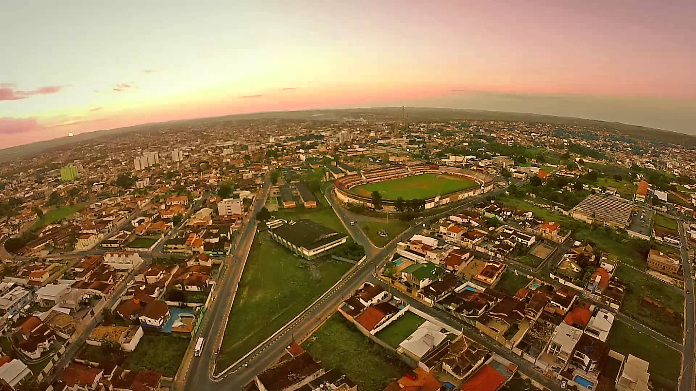
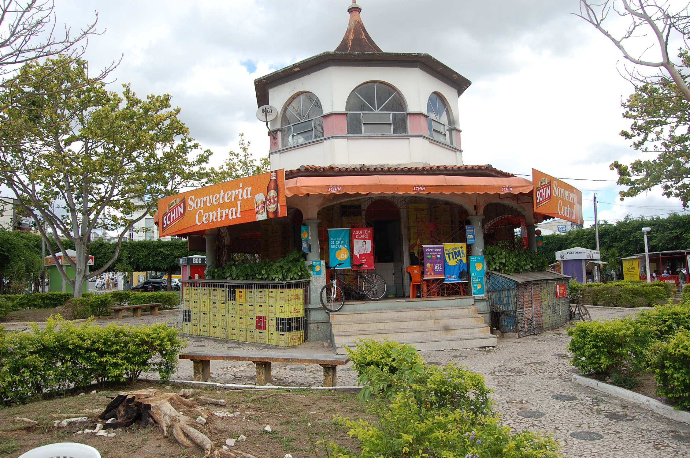

-

City of Alagoinhas
-

Square of Coreto

Our history
The history of Alagoinhas begins with the beginning of its settlement in the late eighteenth century, when a Portuguese priest founded a chapel in his territory and from there began the prosperous town due to the arrival of immigrants and the passage of the cattle road, access to the north and the Brazilian sertão, reason of the title given by Ruy Barbosa of "Golden Portico of the Sertão Baiano" As a village, Alagoinhas received several names, which were Freguesia da Água Fria, Parish of Santo Antônio das Lagoinhas and later Villa de Santo Antônio d'Alagoinhas. This latter name was the last as a village, which was later dismembered from the village of Inhambupe, to be emancipated as the Municipality of Alagoinhas. Around the church of St. Anthony several houses were built, so the village was elevated to the village, through Provincial Resolution 442 of June 16, 1852. Later, likewise, caused by the development of the village, which was generated and guided by the railway station, which was the center of economic activities, due to the great flow of people and goods, was raised to the municipality of Santo Antônio de Alagoinhas, being dismembered from the municipality of Inhambupe. According to IBGE, the district of Alagoinhas was created on October 15, 1816, belonging to Inhambupe until June 16, 1852, when it became a municipality. The political emancipation of Alagoinhas was officialized 153 years ago, on July 2, 1853, with the inauguration of the first City Hall and the president of the Council, Colonel José Joaquim Leal.